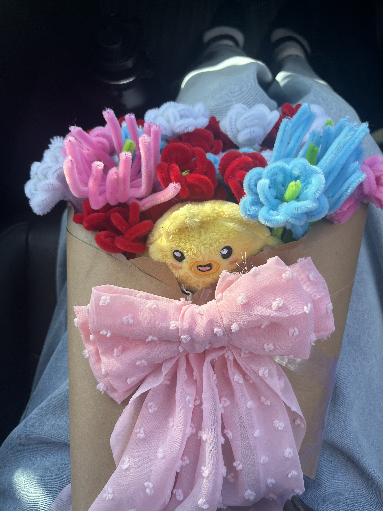

Our flower story

A little beginningWhere it
Where it
all started.
A little bouquet, a big pink bow, and a small beginning worth keeping.
Every bouquet after this has been another way to say I’m thinking of you. This little collection is a place to keep them, along with the words I want each flower to carry.
A few petals. A few memories. All for you.